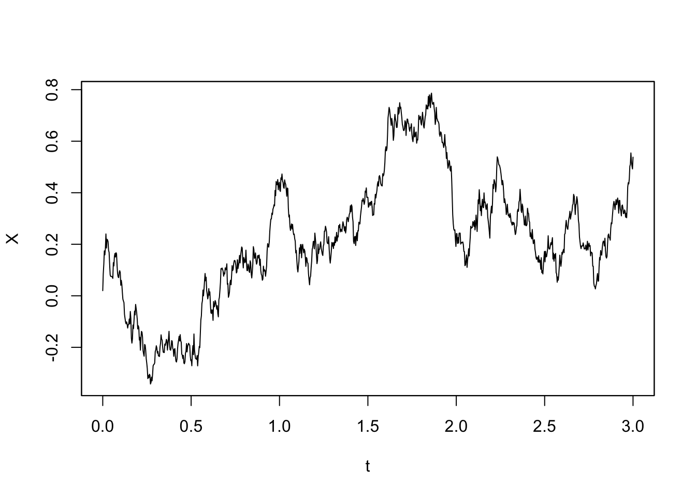
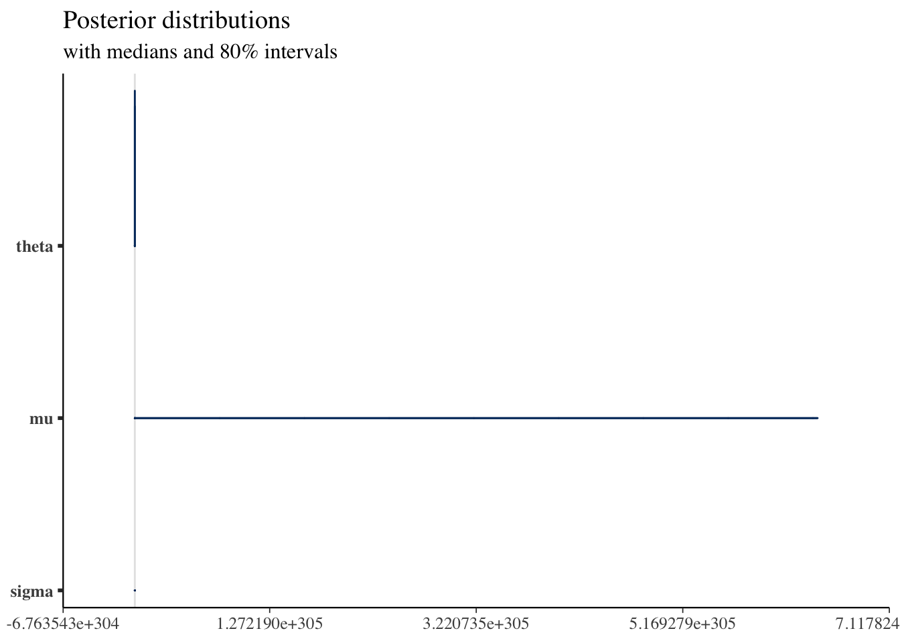

YUIMA 入門
確率微分方程式のシミュレーションと推測のためのパッケージ`yuima`の構造と使い方をまとめます．
A Blog Entry on Bayesian Computation by an Applied Mathematician
$$ %%% 汎用コード列%%% 演算子
%%% 線型代数学%%% 複素解析学 %%% 集合と位相
%%% 形式言語理論 %%% Graph Theory
%%% 多様体 %%% 代数 %%% 代数的位相幾何学 %%% 微分幾何学 %%% 函数解析 %%% 積分論%%% Fourier解析 %%% 数値解析
%%% 確率論%%% 情報理論 %%% 量子論 %%% 最適化 %%% 数理ファイナンス
%%% 偏微分方程式 %%% 常微分方程式 %%% 統計力学 %%% 解析力学
%%% 統計的因果推論 %%% 応用統計学 %%% 数理統計%%% 計量経済学
%%% 無限次元統計模型の理論%%% Banach Lattices
%%% 圏 %代数の圏 %Metric space & Contraction maps %確率空間とMarkov核の圏 %Sober space & continuous map %Category of open subsets %Category of sheave %Category of presheave, PSh(C)=[C^op,set]のこと %Convergence spaceの圏 %一様空間と一様連続写像の圏 %フレームとフレームの射 %その反対圏 %滑らかな多様体の圏 %Quiverの圏
%%% SMC %%% 括弧類%%% 予約語
%%% 略記
%%% 矢印類 $$
R の YUIMA パッケージに関する詳細は，次の記事も参照：
ベイズ推定には R パッケージ RStan を通じて，確率的プログラミング言語 Stan を用いることを考える．Stan については次の記事も参照：
具体的には，R において，次のような関数を定義する：
adastan <- function(yuima){
excode <- 'data {
int N;
real x[N+1];
real T;
real h;
}
parameters {
'
for(i in 1:length(yuima@model@parameter@all)){
excode <- paste(excode,
"real<lower=0>",
yuima@model@parameter@all[i], ";"
)
}
excode <- paste(excode,"}")
excode <- paste(excode,
'model {
x[1] ~ normal(0,1);
for(n in 2:(N+1)){'
)
excode <- paste(excode,
"x[n] ~ normal(x[n-1] + h *",
gsub("x", "x[n-1]", yuima@model@drift),
",sqrt(h) *",
gsub("x", "x[n-1]", yuima@model@diffusion[[1]]),");"
)
excode <- paste(excode,'}}')
sde_dat <- list(N = yuima@sampling@n,
x = as.numeric(sim@data@original.data),
T=yuima@sampling@Terminal,
h=yuima@sampling@Terminal/yuima@sampling@n)
fit <- stan(model_code=excode,
data = sde_dat,
iter = 1000,
chains = 4)
return(fit)
}adastan という関数を定義する．この関数は，Yuima パッケージのオブジェクトを引数として受け取り，Stan での推定を行い，その結果を fit オブジェクトとして返す．
excode 変数に格納する．
adastan 関数の本体である．Yuima モデルの全てのパラメータについてループを開始して，excode にパラメータの宣言を追加していく．
x[1] は \(\mathrm{N}(0,1)\) に従う．
x[n] は，前の観測値 x[n-1] に drift 項と diffusion 項を加えたものに従う．これを実装するために，Yuima モデルの drift 項と diffusion 項の定義文を呼び出し，x を x[n-1] に置換することで Stan モデルのコードに埋め込む．
sde_dat を作成する．
fit オブジェクトとして返す．
これが最初に思いつく，最も直接的な方法かも知れないが，このままではいくつかの問題がある：
そこで，もっと良い方法を考えたい．
具体例を見てみる．YUIMA を通じて１次元 OU 過程
\[ dX_t=\theta(\mu-X_t)\,dt+\sigma\,dW_t \]
をシミュレーションをするためには，次のようにモデル定義をする：
library(yuima)
model <- setModel(drift = "theta*(mu-X)", diffusion = "sigma", state.variable = "X")これだけで，YUIMA は勝手にパラメータを識別してくれる：
str(model@parameter)Formal class 'model.parameter' [package "yuima"] with 7 slots
..@ all : chr [1:3] "theta" "mu" "sigma"
..@ common : chr(0)
..@ diffusion: chr "sigma"
..@ drift : chr [1:2] "theta" "mu"
..@ jump : chr(0)
..@ measure : chr(0)
..@ xinit : chr(0) str(model@drift) expression((theta * (mu - X)))str(model@diffusion)List of 1
$ : expression((sigma))これを通じて生成される Stan モデル文は
data {
int N;
real x[N+1];
real T;
real h;
}
parameters {
real<lower=0> theta;
real<lower=0> mu;
real<lower=0> sigma;
}
model {
x[1] ~ normal(0,1);
for(n in 2:(N+1)){
x[n] ~ normal(x[n-1] + h * theta * (mu - x[n-1]),
sqrt(h) * sigma);
}
}となるべきである．
YUIMA の時点で文字列を直接取り扱っており，オブジェクト model がそれを格納しているのだから，もはやこのまま用いることは極めて自然である．
オブジェクト志向言語ではコード自体もオブジェクトであり，これを R では Expression と呼ぶ．
１つのクラスからなるわけではなく，call, symbol, constant, pairlist の４つの型からなる．1
次のような操作ができる2
rlang::expr がコンストラクタである：
z <- rlang::expr(y <- x*10)
zy <- x * 10expression オブジェクトは base::eval() で評価できる：
x <- 4
eval(z)
y[1] 40expression には list のようにアクセス可能である：3
f <- expr(f(x = 1, y = 2))
# Add a new argument
f$z <- 3
ff(x = 1, y = 2, z = 3)#> f(x = 1, y = 2, z = 3)
# Or remove an argument:
f[[2]] <- NULL
ff(y = 2, z = 3)#> f(y = 2, z = 3)stan 関数RStan パッケージの本体は stan 関数である：
stan(file, model_name = "anon_model", model_code = "", fit = NA,
data = list(), pars = NA,
chains = 4, iter = 2000, warmup = floor(iter/2), thin = 1,
init = "random", seed = sample.int(.Machine$integer.max, 1),
algorithm = c("NUTS", "HMC", "Fixed_param"),
control = NULL, sample_file = NULL, diagnostic_file = NULL,
save_dso = TRUE, verbose = FALSE, include = TRUE,
cores = getOption("mc.cores", 1L),
open_progress = interactive() && !isatty(stdout()) &&
!identical(Sys.getenv("RSTUDIO"), "1"),
...,
boost_lib = NULL, eigen_lib = NULL
)重要な引数のみピックアップすると，
model_code=""：Stan モデルを定義するコードを，文字列として直接受け渡す．他の方法は file としてファイルへのパスを渡すか，フィット済みのものを fit オブジェクトとして渡すか，の２つのみである．data：前述の OU 過程 [-@#sec-exp-OU]
\[ dX_t=\theta(\mu-X_t)\,dt+\sigma\,dW_t \]
で stan 関数でベイズ推定を実行してみます．
パラメータは \[ \begin{pmatrix}\theta\\\mu\\\sigma\end{pmatrix} = \begin{pmatrix}1\\0\\0.5\end{pmatrix} \] として YUIMA を用いてシミュレーションをし，そのデータを与えてパラメータが復元できるかをみます．
library(rstan)
excode <- "data {
int N;
real x[N+1];
real T;
real h;
}
parameters {
real<lower=0> theta;
real<lower=0> mu;
real<lower=0> sigma;
}
model {
x[1] ~ normal(0,1);
for(n in 2:(N+1)){
x[n] ~ normal(x[n-1] + h * theta * (mu - x[n-1]),
sqrt(h) * sigma);
}
}"
sampling <- setSampling(Initial = 0, Terminal = 3, n = 1000)
yuima <- setYuima(model = model, sampling = sampling)
simulation <- simulate(yuima, true.parameter = c(mu = 0,theta = 1, sigma = 0.5),
xinit = 0.02)
sde_dat <- list(N = yuima@sampling@n,
x = as.numeric(simulation@data@original.data),
T=yuima@sampling@Terminal,
h=yuima@sampling@Terminal/yuima@sampling@n)# シミュレーション結果
plot(simulation)
# ベイズ推定
rstan_options(auto_write = TRUE)
options(mc.cores = parallel::detectCores())
fit <- stan(model_code=excode, data = sde_dat, iter = 1000, chains = 4)
library("bayesplot")
library("rstanarm")
library("ggplot2")
posterior <- as.matrix(fit)
plot_title <- ggtitle("Posterior distributions",
"with medians and 80% intervals")mcmc_areas(posterior,
pars = c("theta", "mu", "sigma"),
prob = 0.8) + plot_title
brms や rethinking も，背後で Stan を利用している．これらが文字式をどのように取り扱っているかを調査する．
(Wickham, 2019) 第17章２節．↩︎
(Wickham, 2019) 第17章２節．↩︎